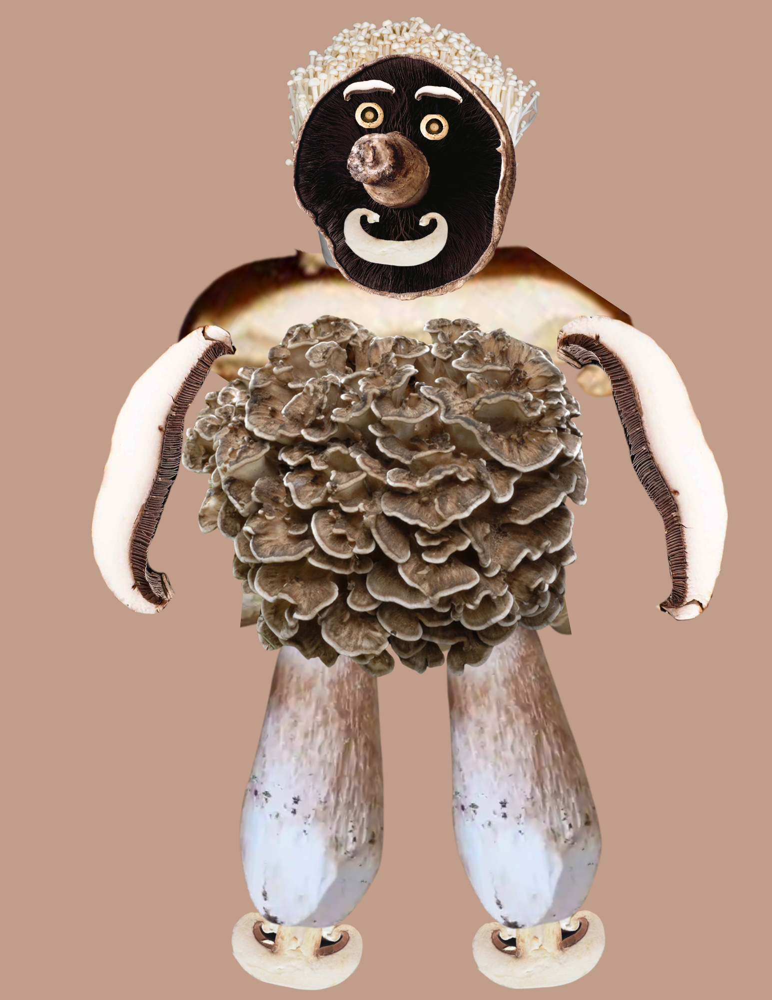

By: Thomas Leonard
I need to work on my charts now that my ENVS exam is done.
ADD Religion Button Lot of Vivek had discussions of religion that was not family/personal YES: Use family/ personal (and religion button of course) for PERSONAL relationship w God Use religion button generally GET RID OF point factors Too much discrepancy, feasability purposes Hard to code with intervals Laughter not the best indication of engagement (different kinds of laughs on videos)

Here is a link.
